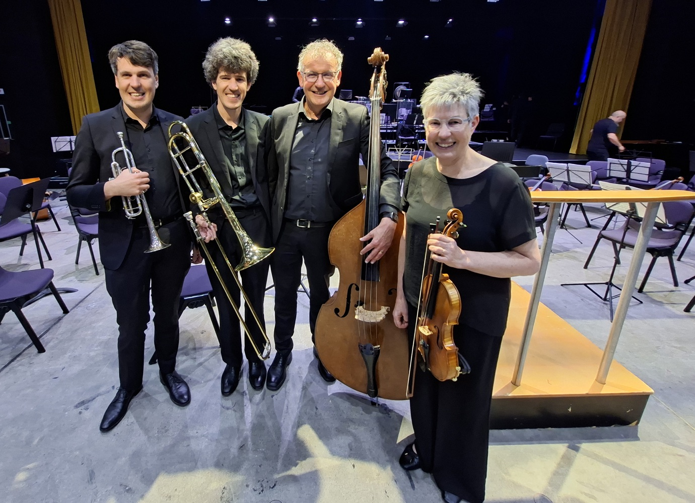
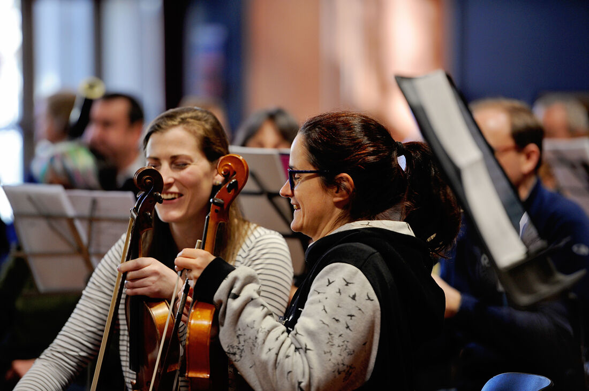
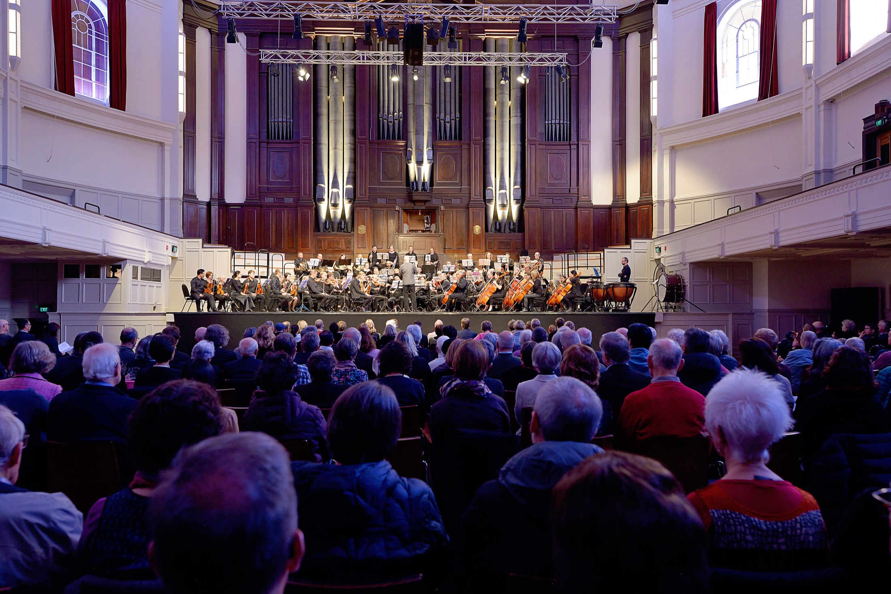

The New Zealand Doctors Orchestra (NZDO) brings together doctors and medical students from across New Zealand who share a passion for orchestral music.
We are a full symphony orchestra of around 65–80 players. Our musicians bring a wide range of musical experience, and many continue to perform regularly. What unites us is a commitment to making music at a high standard and sharing it with audiences around Aotearoa.
Come and hear us perform substantial works from the orchestral repertoire.
Our musicians cover the costs of staging concerts, so every dollar from ticket sales goes to a charitable cause in the community where we perform. By attending a concert, audiences support both outstanding live music and health care in their community.
These are themes we hear repeatedly from NZDO players:
Some players already play in other orchestras; others had stopped playing after school or university. The NZDO gives people a reason to pick up their instrument again and provides a way of combining music with a career in medicine.

Thanks so much again for such a wonderful weekend which personally is always one of the highlights of the year!! Apart from coming together to make music which always develops so awesomely over the 3 days, it’s so nice to catch up with the fantastic people from around the country that we have got to know over the years, as well as meeting some new faces each year.
I just want to say VERY BIG THANK YOU. I have been buzzing all week and every time I think about the orchestra weekend I smile. When I saw your ad, I thought now is the time you have been forever saying that you wanted to go back to an orchestra so here is your chance. I dusted off my instrument and started to practise. It has been like finding an old friend again. The pieces were hard in parts but the conductor was charming as were the other members of the orchestra. It is such a gift that you have given me. I know from talking to other members in the orchestra that I am not the only one who felt this way. So well done and thank you, you provided marvellous medicine for us all.

